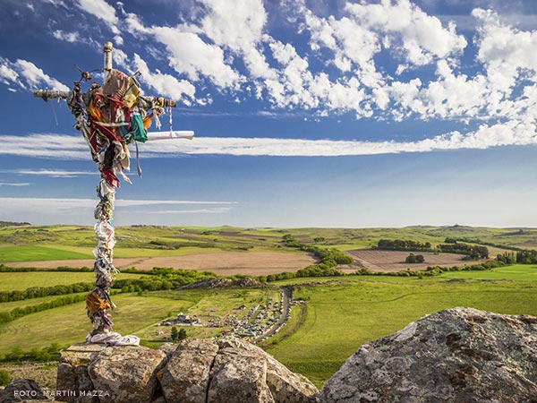
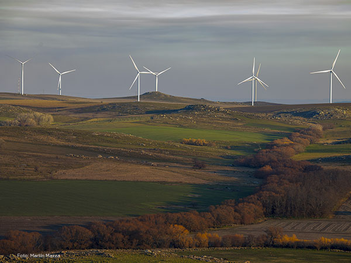
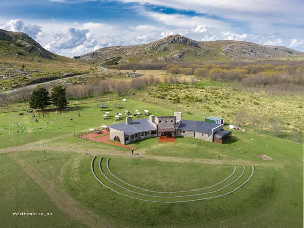
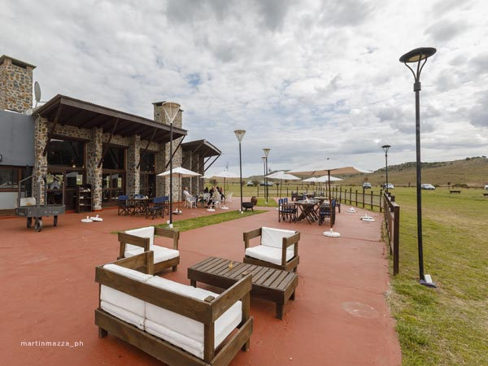
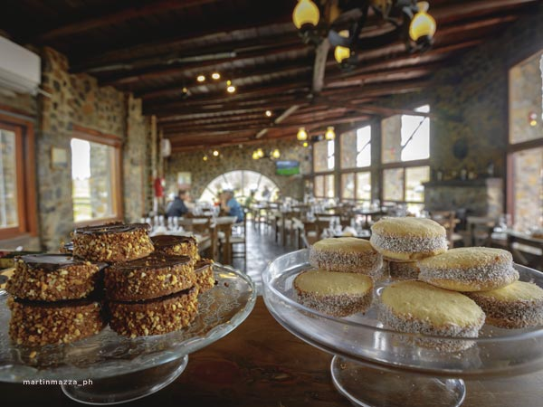
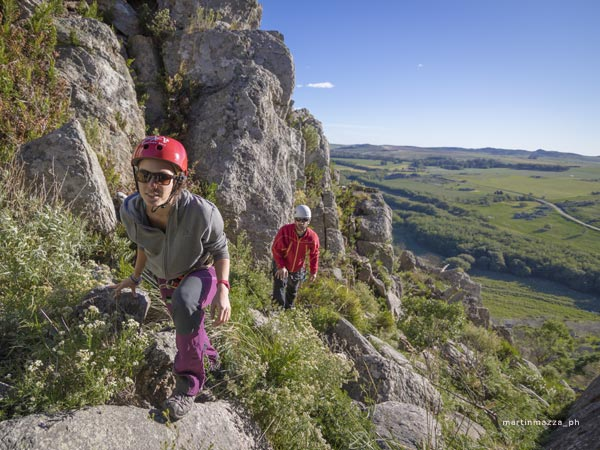

Hoteles

Boca de las sierras

Cerro de la cruz

Parque eólico "Los Teros"

Monasterio Trapense

Parador municipal

Parador municipal

Gastronomía serrana

Gastronomía serrana

Pablo Acosta

Turismo aventura en las sierras

Turismo aventura en las sierras
Circuito enmarcado por sierras formadas por las rocas más antiguas del planeta. Viajando por la ruta 80 y sin apuros, la propuesta serrana de Azul es pasar el día en medio de la naturaleza, apreciando paisajes panorámicos, aventurandose por senderos entre rocas gigantes y arroyos, disfrutando de sabores regionales de primer nivel.
- Categoría: Sierras
- Actividades: Caminatas, fotografía, ciclo turismo, avistaje de fauna